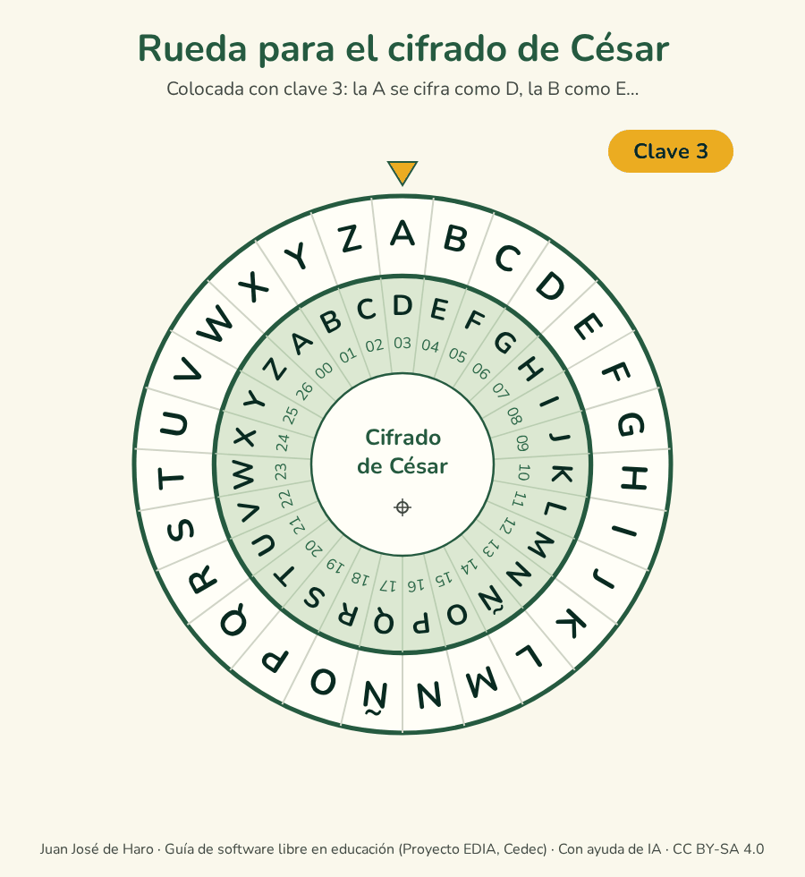
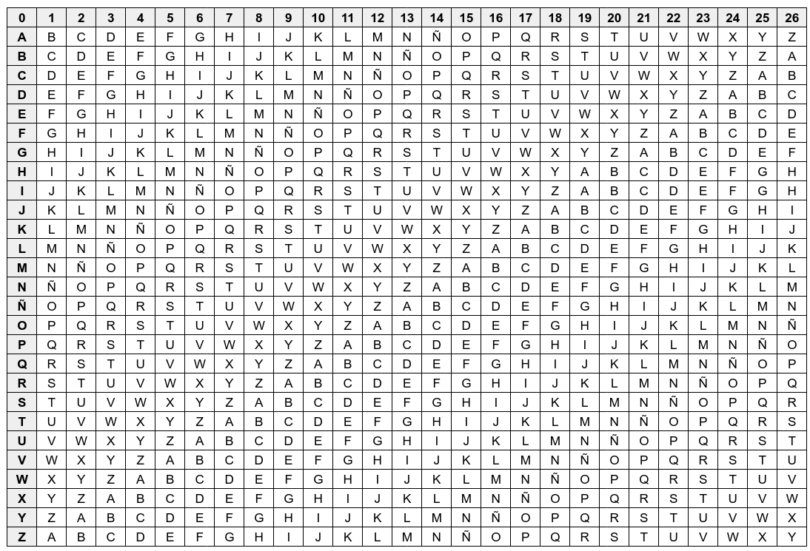
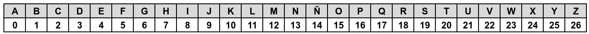
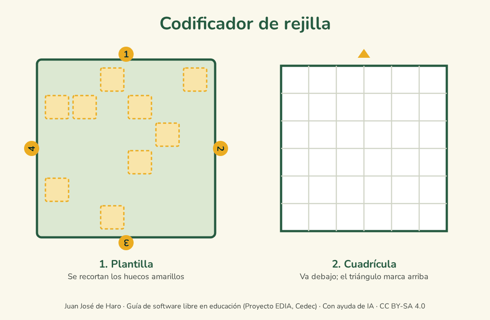
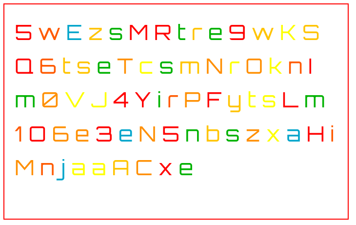
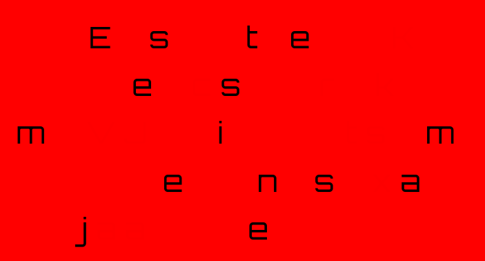
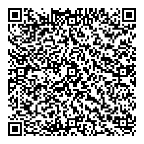

Gamificación a través del cifrado
El cifrado de textos es ideal para crear las pistas de un escape room o de cualquier actividad a la que se quiera dar un toque de juego. Aquí no se diseña una actividad completa, sino que se recogen algunos métodos para crear pistas y esconder información, que se pueden combinar según la edad del alumnado.
Además de motivar, estas técnicas muestran que existe una forma de proteger los mensajes y que tiene sus límites. El último apartado, «Romper el cifrado», aprovecha lo aprendido para entender por qué el cifrado que protege hoy las comunicaciones, explicado en «Cifrado y comunicaciones seguras», es tan distinto de estos métodos clásicos.
Cifrado de César
Destinatarios: último ciclo de Primaria y ESO. Duración: una sesión. Agrupamiento: por parejas. Evaluación: lista de cotejo del mensaje cifrado y descifrado.
Es uno de los cifrados más antiguos: se atribuye a Julio César, que lo usaba en su correspondencia militar. Consiste en sustituir cada letra por la que ocupa un número fijo de posiciones más adelante en el alfabeto. Ese número es la clave. Con el alfabeto español, de 27 letras, la clave puede ir de 1 a 26. Por ejemplo, con clave 3, la A se convierte en D, la B en E y la Z, al volver a empezar, en C.
Para cifrar y descifrar con comodidad se puede usar una rueda como la siguiente, que está lista para imprimir y recortar en PDF.


Se recortan los dos discos y se sujeta el pequeño sobre el grande con un encuadernador, de modo que pueda girar. Para cifrar con clave 3, se gira el disco interior hasta que el número 03 quede bajo la A del exterior: cada letra del mensaje se busca en el disco exterior y se sustituye por la que tiene debajo. Para descifrar se hace lo contrario.
Una vez entendido el método, se puede llevar a la programación con este ejemplo de cifrado de César en Scratch.
Cifrado de Vigenère
Destinatarios: ESO. Duración: una o dos sesiones. Agrupamiento: por parejas. Evaluación: guía de corrección de los mensajes cifrados y descifrados.
El cifrado de Vigenère mejora el de César usando una palabra como clave, de modo que cada letra se desplaza un número distinto de posiciones. Durante siglos se le llamó «el cifrado indescifrable», hasta que en el siglo XIX se encontró la forma de romperlo. Hoy, con ordenadores, no ofrece ninguna seguridad, pero es muy útil para entender la idea de clave.
Se usan las dos tablas siguientes, que también están en PDF para imprimir, junto con un ejemplo.




Un ejemplo sencillo:
- Se elige una palabra como clave, por ejemplo, sol.
- En la segunda tabla se busca el número de cada letra de la clave: 19, 15 y 11.
- Para cifrar la palabra nublado, a cada letra se le asigna uno de esos números, en orden, y cuando se acaban se vuelve a empezar: n → 19, u → 15, b → 11, l → 19, a → 15, d → 11, o → 19.
- En la primera tabla se busca cada letra a la izquierda y su número arriba, y se toma la letra del cruce: n → F, u → J, b → M, l → D, a → O, d → Ñ, o → H.
- La palabra cifrada es FJMDOÑH. Para descifrarla se sigue el camino inverso.
Para saber más, el vídeo ¿Qué es la cifra de Vigenère?, de la Universidad Politécnica de Madrid, explica su historia, el método y la operación matemática en la que se basa, lo que resulta útil para programarlo.
Codificador de rejilla
Destinatarios: último ciclo de Primaria y ESO. Duración: una sesión. Agrupamiento: por parejas. Evaluación: lista de cotejo.
La rejilla es una plantilla con huecos que se coloca sobre una cuadrícula. El mensaje se escribe letra a letra a través de los huecos; después se gira la plantilla un cuarto de vuelta y se sigue escribiendo, hasta completar las cuatro posiciones. Así caben 36 letras. Las casillas que quedan vacías se rellenan con letras al azar, de modo que solo quien tenga la misma plantilla podrá leer el mensaje.
La plantilla y las cuadrículas, con las instrucciones, están en PDF para imprimir.


Codificador de colores
Destinatarios: Primaria y primer ciclo de ESO. Duración: una sesión. Agrupamiento: pequeños grupos. Evaluación: observación.
La web EduEscapeRoom ofrece un codificador de colores que esconde un mensaje entre letras de colores. Solo se puede leer mirando a través de un celofán rojo transparente, sobre el papel impreso o directamente sobre la pantalla. El celofán puede ser grande, para mirar a través de él, o tan pequeño que solo cubra la cámara del móvil.
Así se ve un mensaje antes y después de aplicar el filtro:




Códigos QR
Destinatarios: ESO. Duración: una sesión. Agrupamiento: pequeños grupos. Evaluación: lista de cotejo.
Los códigos QR, formados por una cuadrícula de puntos negros y blancos, permiten esconder un texto, una dirección web o una ubicación. No cifran la información, ya que cualquier lector la muestra, pero son muy prácticos para repartir pistas por el aula o el centro.
Para crearlos no hace falta ninguna web: LibreOffice los genera desde el menú Insertar > Objeto OLE > Código de barras y QR, y se pueden imprimir o pegar en cualquier documento.

Para leerlos basta con la cámara de casi cualquier móvil actual. También hay aplicaciones libres, como Binary Eye, disponible en F-Droid, que además permite generarlos.
Romper el cifrado
Destinatarios: ESO y Bachillerato. Duración: una o dos sesiones. Agrupamiento: equipos de tres o cuatro personas. Evaluación: explicación oral del método seguido por cada equipo y billete de salida.
Después de cifrar mensajes, el paso siguiente es intentar romperlos. Cada equipo recibe un texto de unas pocas líneas cifrado con César, sin conocer la clave, y tiene que descifrarlo. Hay dos caminos:
- Probar todas las claves. Solo hay 26 posibles, así que en poco tiempo se da con la buena. Se puede repartir el trabajo dentro del equipo.
- Contar las letras. En español, las letras más frecuentes son la E y la A. Si en el texto cifrado la letra que más se repite es la H, lo más probable es que corresponda a la E, y la clave sea 3.
Al terminar, cada equipo explica en voz alta cómo lo ha conseguido y cuánto ha tardado. La conclusión es que un cifrado es seguro solo si probar todas las claves resulta imposible en la práctica. César tiene 26 claves; el cifrado que protege hoy las conversaciones de Signal usa claves de 256 bits, con un número de combinaciones de 78 cifras, que ni todos los ordenadores del mundo juntos podrían probar.
Para cerrar, cada estudiante responde en un billete de salida por qué el cifrado de César no serviría para proteger una conversación actual y qué lo hace diferente del cifrado de un programa de mensajería.